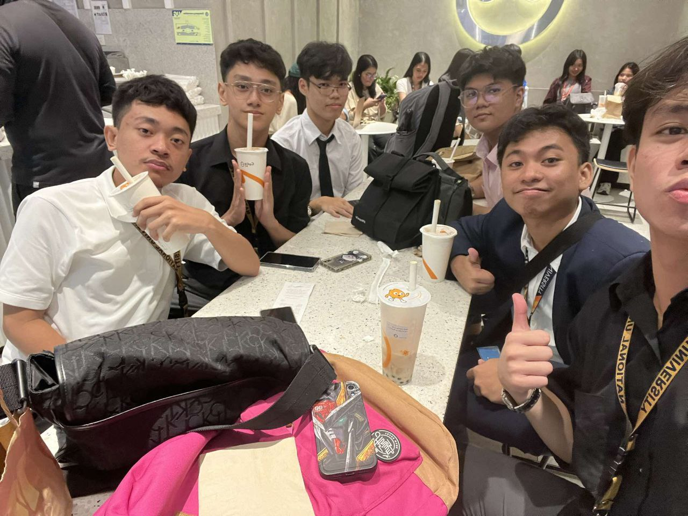
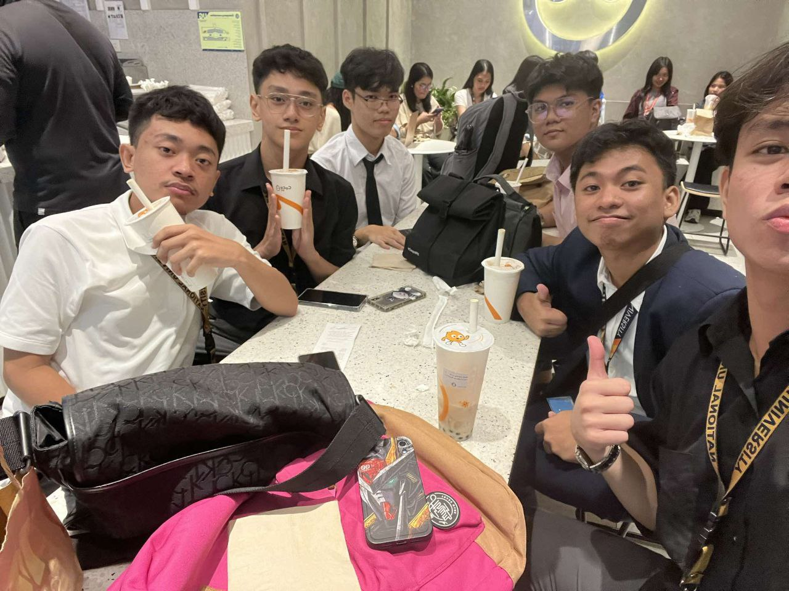
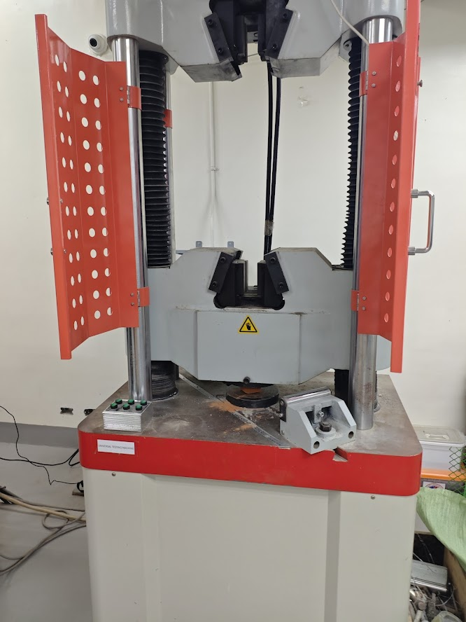
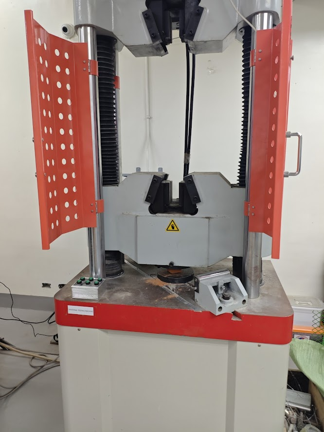

Academic Achievements
NU Fairview
Location: Fairview, Quezon City
Strand: STEM with specialization in IT-CoE
- With Honors, Grade 11 (1st and 2nd Term)
- With Honors, Grade 12 (1st, 2nd, and 3rd Term)
School of Our Lady of La Salette
Location: San Jose Del Monte, Bulacan
Level: Completed Junior Highschool
- With Honors, Grade 7-10
- Computer Technician Award, Grade 10
Research Projects
ROLLING THE DICE: EXPLORING THE ROLE OF PROBABILITY AND ALGORITHM DESIGN IN PLAYER ENGAGEMENT AND SPENDING BEHAVIOR IN GACHA GAMES
Practical Research 1, NU Fairview
 

This research was inspired by our group’s interest in Gacha games and their growing popularity, as well as concerns over their gambling-like mechanics. We investigated how probability, design choices, and storytelling affect player engagement and spending behavior. To narrow the scope, we studied three major titles: Genshin Impact, Honkai: Star Rail, and Wuthering Waves. Our participants included nine individuals, such as streamers and high-spending players, who provided insights through interviews.
The study found that limited-time events, character design, and narrative depth are key motivators for players, creating both excitement and attachment. However, the randomness of gacha systems often leads to impulsive spending and frustration, reflecting behaviors similar to gambling. While some players manage their budgets responsibly, others struggle with financial strain and time management. Ultimately, we concluded that gacha games are highly effective at sustaining engagement, but players must practice mindful gaming to avoid negative impacts.
EVALUATING THE PERFORMANCE OF COCONUT HUSK-CLAY MIXTURES AS SUSTAINABLE INSULATION MATERIALS
Practical Research 2, NU Fairview
 

This research explored the use of coconut husk–clay mixtures as a sustainable insulation material, with the goal of creating a low-cost and eco-friendly option for construction. Different sample mixtures with varying ratios were prepared and subjected to tests on thermal insulation, compressive strength, and water absorption to determine their performance.
Results showed that adding husk improved insulation properties and increased strength up to a certain point, with the mixture of 4% coconut husk with 96% clay giving the best balance of thermal performance and durability. Higher husk content, however, led to greater water absorption, which may limit long-term performance. Overall, coconut husk fibers proved to be a promising material for sustainable and cost-effective construction.